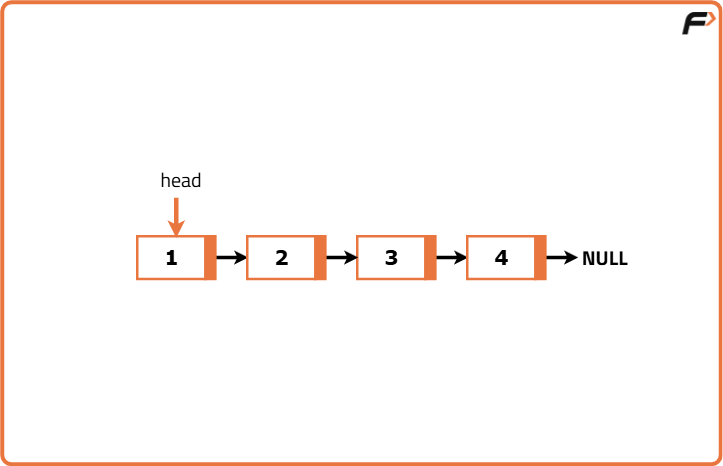
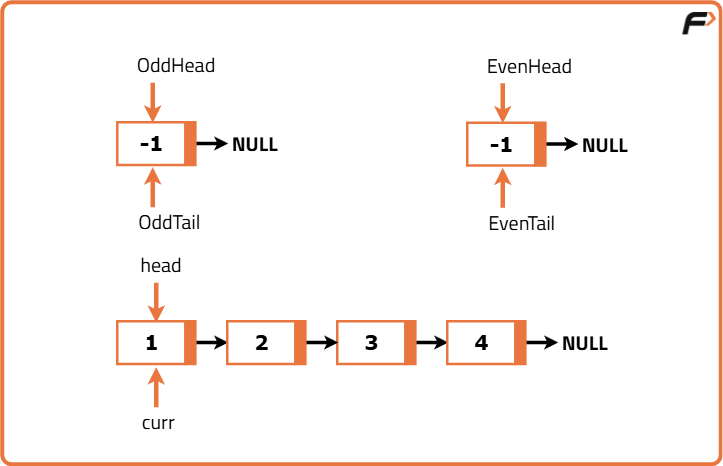
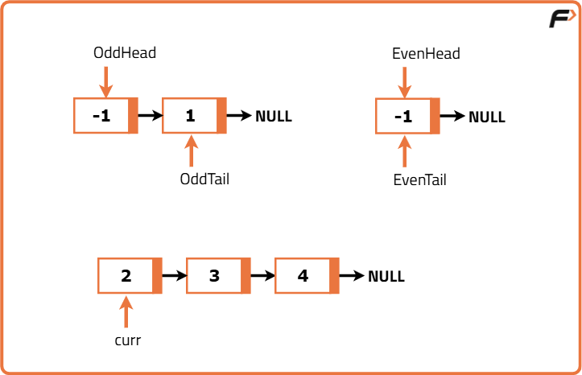
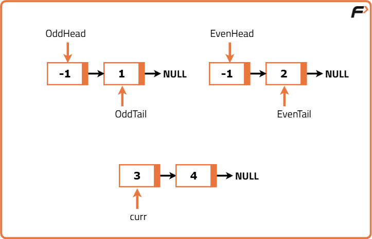
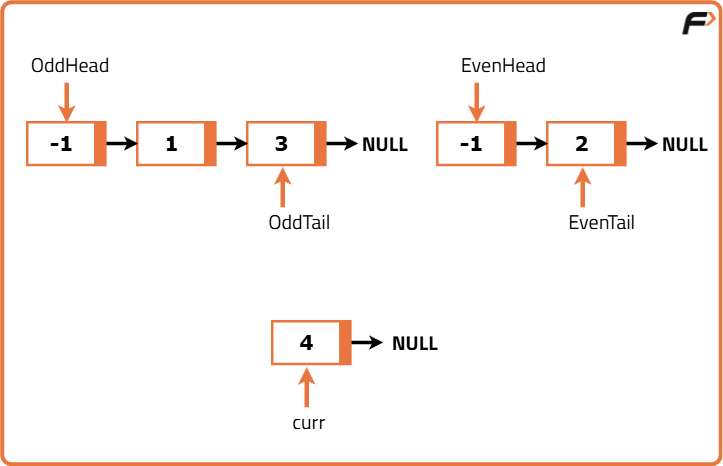
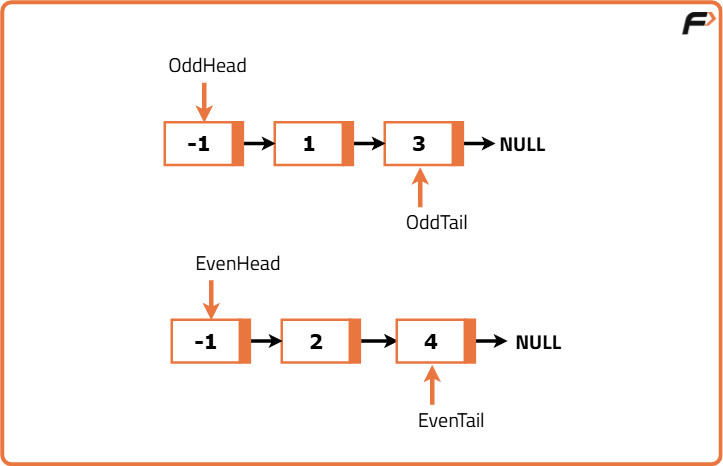
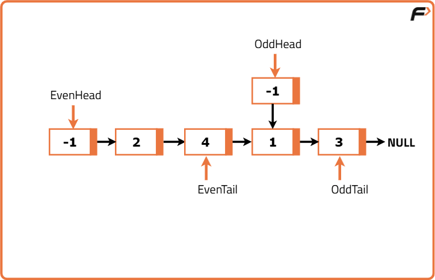
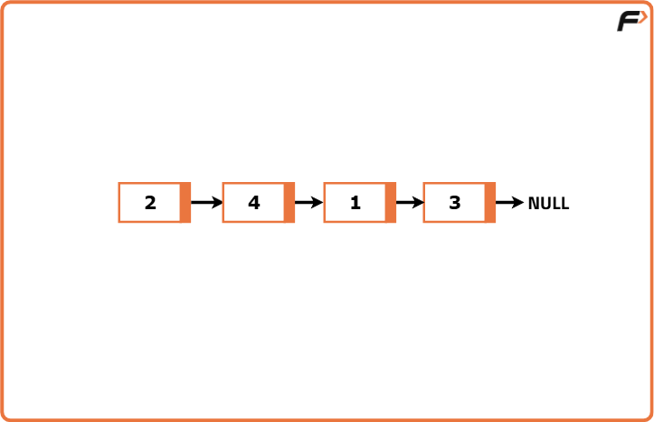

Segregate even and odd nodes in LinkedList
Problem Statement: Given the head of a singly linked list. Group all the nodes with odd indices followed by all the nodes with even indices and return the reordered list. Consider the 1st node to have index 1 and so on. The relative order of the elements inside the odd and even group must remain the same as the given input.
Examples
Input: 1→2→3→4→5→6→Null Output: 2→4→6→1→3→5→Null Explanation : Odd Nodes in LinkedList are 1,3,5 and Even Nodes in LinkedList are 2,4,6 In Modified LinkedList all even Nodes comes before all Odd Nodes. So Modified LinkedList looks like 2→4→6→1→3→5→Null. Order of even and odd Nodes is maintained in modified LinkedList.
Input: 1→3→5→Null Output: 1→3→5→Null Explanation: As there are no Even Nodes in LinkedList, The Modified LinkedList is same as Original LinkedList.
Disclaimer: Here is the practice link to help you assess your knowledge better. It's highly recommend trying to solve it before looking at the solution.
Approach
Algorithm
Instead, the optimal and clean approach is to use two separate lists one for even nodes and another for odd nodes. We iterate through the original list once, appending each node to the appropriate list (even or odd) based on its value. Finally, we link the last node of the even list to the head of the odd list, effectively merging the two while maintaining the required order.
- Initialize two dummy nodes to serve as heads of two separate linked lists one for even and one for odd nodes.
- Keep two pointers that will track the last node in each of these even and odd lists.
- Traverse the original linked list node by node.
- If a node has an even value, append it to the end of the even list using the even pointer.
- If a node has an odd value, append it to the end of the odd list using the odd pointer.
- Move the pointer forward in the original list after each assignment.
- After the traversal ends, connect the last node of the even list to the head of the odd list.
- Make sure the end of the odd list points to null to prevent loops.
- Return the head of the new list, which is the next node after the dummy even head.








Code
#include <bits/stdc++.h>
using namespace std;
class ListNode {
public:
int val;
ListNode* next;
ListNode(int x) {
val = x;
next = nullptr;
}
};
// Head and tail pointers of the LinkedList
ListNode* head, *tail;
// Function to print the LinkedList
void PrintList(ListNode* head) {
ListNode* curr = head;
for (; curr != nullptr; curr = curr->next)
cout << curr->val << "-->";
cout << "null" << endl;
}
// Function to insert a node at the end of the LinkedList
void InsertatLast(int value) {
ListNode* newnode = new ListNode(value);
if (head == nullptr)
head = newnode, tail = newnode;
else
tail = tail->next = newnode;
}
// Function to segregate even and odd nodes in the LinkedList
ListNode* SegregatetoOddEVen() {
// Creating dummy heads and tails for even and odd lists
ListNode* oddHead = new ListNode(-1), *oddTail = oddHead;
ListNode* evenHead = new ListNode(-1), *evenTail = evenHead;
// Current pointer for traversal
ListNode* curr = head, *temp;
while (curr) {
// Detach current node from the list
temp = curr;
curr = curr->next;
temp->next = nullptr;
// Append to odd list if value is odd
if (temp->val & 1) {
oddTail->next = temp;
oddTail = temp;
}
// Append to even list if value is even
else {
evenTail->next = temp;
evenTail = temp;
}
}
// Connect even list with odd list
evenTail->next = oddHead->next;
// Return head of the new rearranged list
return evenHead->next;
}
int main() {
// Inserting elements into the LinkedList
InsertatLast(1);
InsertatLast(2);
InsertatLast(3);
InsertatLast(4);
// Printing initial LinkedList
cout << "Initial LinkedList : " << endl;
PrintList(head);
// Segregating even and odd nodes
ListNode* newHead = SegregatetoOddEVen();
// Printing modified LinkedList
cout << "LinkedList After Segregration " << endl;
PrintList(newHead);
return 0;
}
Complexity Analysis
Time Complexity: O(n), We traverse the entire linked list only once to rearrange the nodes. Each node is visited exactly once. No nested traversal or re-traversal occurs. Hence, linear time in terms of the number of nodes n.
Space Complexity: O(1), We do not use any extra data structures